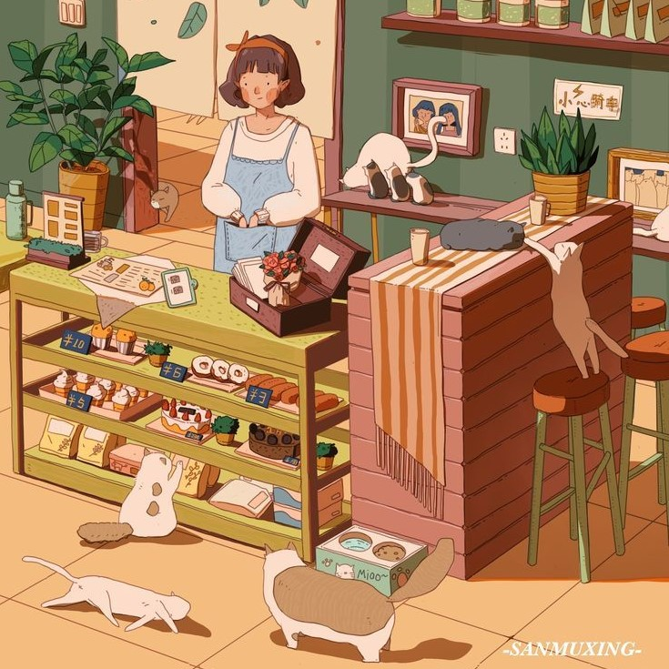
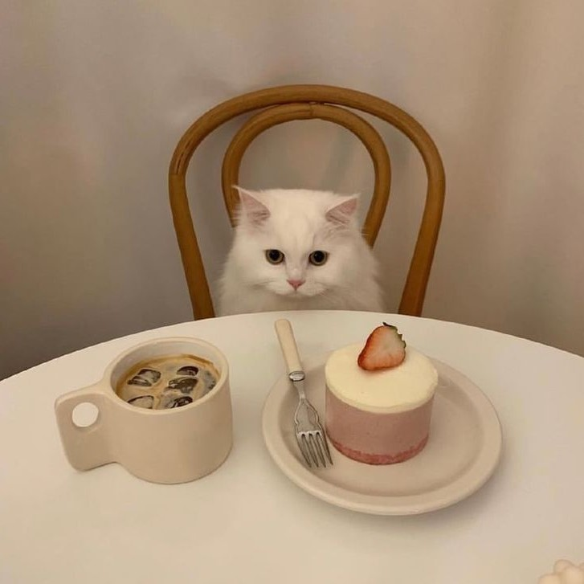
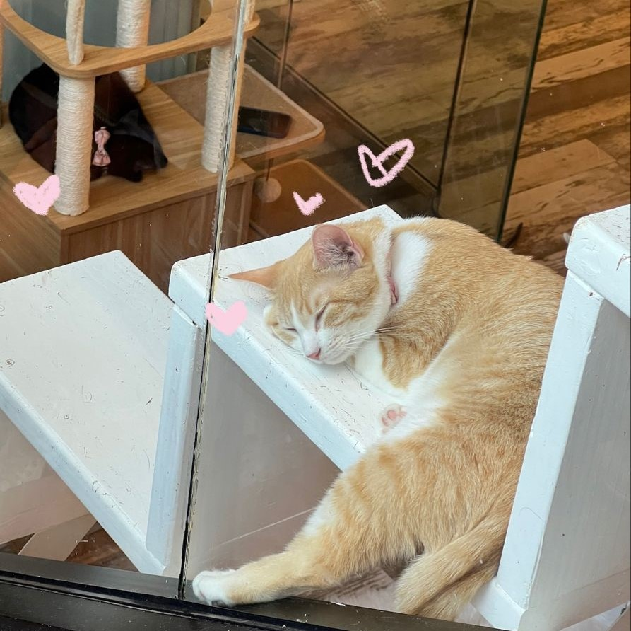
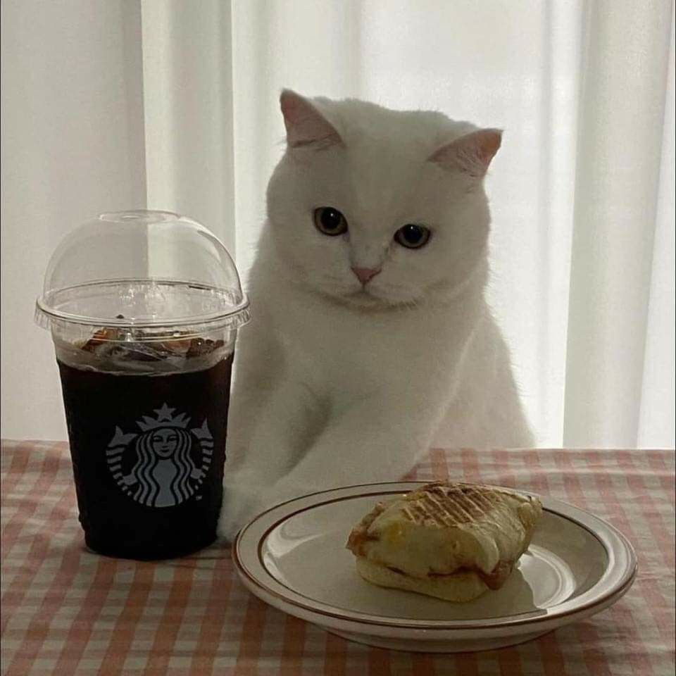
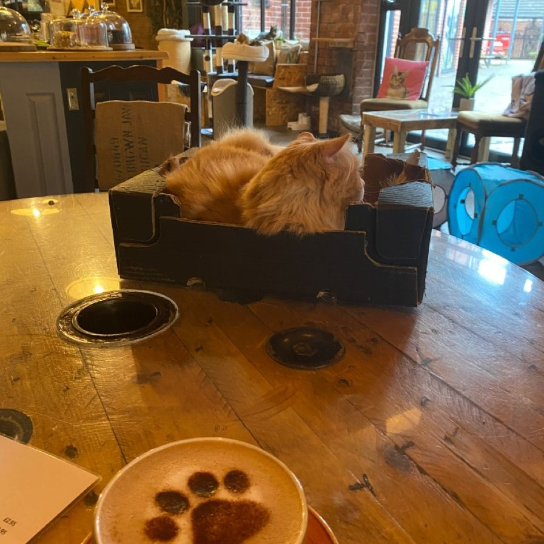

OUR MISSION
In October 2015, the first and only Cat Café in New York opened in Upper East Side, aiming to recreate the intimate atmosphere of Japanese Neko Cafés, adapted to the rhythms and lifestyle of New York, where the absolute owners are the nine cats living inside the establishment.
In addition to providing an environment where visitors can relax with our cats and enjoy our homemade products, Crazy Cat Café has embraced another mission: raising awareness about cat adoption and promoting proper behavior towards our feline friends.
Throughout the year, we organize charity events in collaboration with various associations in the New York area and host conferences with feline industry professionals.




